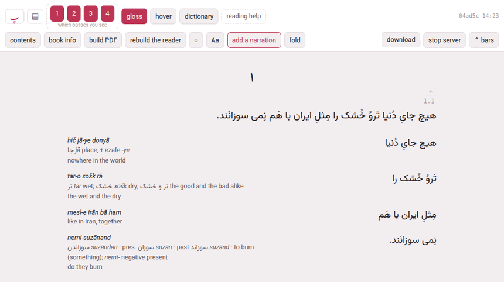

The reader
Click a card on the library and the book opens in its reader, at /books/<language>/<slug>/reader/. It is one page: a header with the controls, and the book under it, subparagraph by subparagraph, each set in the passes its language has.

1. The header#
The header has two rows (three while the narration’s own player shows, in edit times or while nothing is timed yet). What is in it depends on the book: the playing controls appear only in a book with a recording, and the reading-help switches only where something is installed for the language.
The first row — getting about, playing, and what is shown:
| Control | What it does |
|---|---|
| پ | back to the hub |
| ▤ | back to the library |
| ▶ / ‖, continuous, loop, stop at a change, listen, follow, scroll to it, the speed | playing the narration: Playing and listening. Only in a book with a recording. |
| 1 2 3 4 … which passes you see | one button per pass; each shows or hides its pass, and its tooltip says which pass it is. The choice is remembered for every book. |
| gloss (G) | shows or hides the glosses beside the chunks, leaving the chunks themselves |
| hover (H) | hover mode: the text alone, and a chunk’s gloss in a cloud when you point at it (below) |
| dictionary, definitions, in english | reading help where nothing is glossed: Reading a book nobody has glossed. Shown only when a dictionary, a corpus or a translation model is installed for the language. |
| reading help | opens /lookup/, where dictionaries, corpora and models are installed |
| the time | in a book with a recording: where it is, 0:42 / 12:05, and which recording when there are several |
| the build stamp | which build of the reader this is, and when it was made (04ad5c 14:23) |
| draft | the book is a draft (Adding a book) |
| PDF behind the text — build it | appears after an edit: the reader shows it, the PDF does not yet. Click it to build the PDF. |
The second row — the book’s own tools:
| Control | What it does |
|---|---|
| contents (C) | the table of contents: Contents, sections and folding |
| book info | the title, author, year and blurb (below) |
| build PDF | builds the PDF, and the reader with it, on the server: The printed edition |
| rebuild the reader | writes this page again, without LaTeX — what a book built before a new feature needs to gain it |
| ○ ● ◐ | the theme — light, dark, sepia — one choice for the whole toolbox |
| Aa | text size and margins (below) |
| narration — add a narration in a book with none | the recordings of the book: Adding a narration |
| fold | folds a run of paragraphs away: Contents, sections and folding |
| edit times, save times (N), discard edits | fixing the timings by hand: Fixing the timings. Only in a book with a recording. |
| download | the book as one zip: Taking a book away |
| stop server | stops Parseh. It turns into really stop? for four seconds, and a second click stops it — after naming anything still running (a build, an upload) that stopping would cut off. Your place and your speed are saved first. |
| ⌃ bars | puts the header away (below) |
| Decompose Kanji / Decompose Hanzi | Japanese and Chinese only (below) |
2. Reading place#
A click anywhere in a subparagraph makes it the reading place, and highlights it — and, where it has a time in the recording, plays it. The place is remembered for each book in this browser: open the book again and the page goes back to it. → and ← move to the next and the previous subparagraph.
The contents are links, so the address bar carries the paragraph you jumped to — …/reader/#par-2-6 — and sending that address to yourself (from a phone to a computer, say) opens the book at that paragraph.
One chapter at a time. A book of several chapters arrives with its first chapter only; every other chapter is fetched when it is wanted — the contents jumped into it, the reading place is in it, the narration played into it, or you simply read on and it came near. Nothing else changes, and it is what makes a long novel usable over a phone’s connection to a computer at home. The one thing given up: the browser’s own find-in-page sees only the chapters that have arrived. The filter of the contents finds every paragraph of the book.
3. Passes and glosses#
The numbered buttons show and hide the passes one by one: turn everything off but pass 1 to read the sentence alone, or leave only the chunks to work through the glosses. gloss keeps the chunks and hides their glosses, so you can test yourself against the column of chunks. Every choice is remembered in this browser.
4. Hover mode and the gloss cloud#
hover (or H) strips the glosses out of the page, so you read the text clean, and shows a chunk’s gloss only when you point at it in pass 1. It is how an edition is meant to be read once a chapter stops being new. While it is on, the buttons it swallows — the chunks-and-glosses pass, the alternate face or the vertical pass, and gloss — go grey, because pressing them would change nothing; the text passes keep their buttons.
The cloud holds the chunk’s reading (in Japanese), its transliteration, its vocabulary line and its meaning, and under them three buttons:
- + card
- makes a card of the chunk (below);
- ⨉ copy
- copies the chunk’s text;
- ✎ edit
- opens the chunk for writing (Writing a chunk).
The cloud stays open while the pointer moves into it, and goes when the pointer leaves or you click elsewhere. On a touch screen, a tap on a chunk opens its cloud and a second tap closes it.
A chunk that nobody has glossed yet has no vocabulary line, and where nothing is installed for reading such chunks the cloud says nothing glossed here yet and links to the page that sets it up. Where something is, and the dictionary switch is on, the cloud holds what it found instead (Reading a book nobody has glossed).
5. Copying#
A plain click sets the reading place and a modifier-click makes a card, so copying takes a held Shift. With Shift held, the chunk under the pointer is outlined; Shift-click it — in any pass — and its text is on the clipboard. Shift-click beside a chunk and you copy the whole pass, the sentence. A toast says what was copied. On a touch screen, where there is no Shift, use ⨉ copy in the cloud. Readings (the kana over Japanese words) are never copied with the text.
6. Making a card#
Alt-click (or Ctrl-click, or ⌘-click on a Mac) any word of a chunk — in pass 1 or in a chunk row — and the card sheet opens with that word; + card in the cloud does the same for the whole chunk. The sheet sends the card to Anki, to one of the toolbox’s exercise decks, or as markdown to the clipboard, as a vocabulary, opposites or jolly card, with a recording cut from the narration if you like (🔊 cut the audio…). The Cards and Anki section of this guide covers the sheet in full; the narration pauses while it is open.
7. Aa: text and margins#
Aa opens a panel of sliders, remembered in this browser; reset puts back the printed edition’s proportions, and ✕ or Esc closes it.
| Slider | Range | What it sets |
|---|---|---|
| the language (Persian, Japanese…) | 14–36 px, 20 to begin with | the size of the text |
| glosses | 10–20 px, 12.5 | the size of the glosses |
| width | 480–1400 px, 760 | the width of the column |
| leading | 0.7–1.6×, 1 | the space between the lines |
| columns height | 10–40 em, 22 | Japanese and Chinese: the height of the columns of the vertical pass |
| character spacing | 0–1 em, 0 | Japanese and Chinese: space between the characters of the running text |
| reading contrast | 0–100 %, 0 | Japanese: how dark the furigana are, from the faint grey of the page’s secondary text to the full ink of the text |
| reading / kanji size | 10–200 %, 50 | Japanese: the size of the furigana against the characters under them |
The three Japanese and Chinese sliders act on the running text; the cloud always keeps the full reading.
8. Japanese and Chinese#
Readings over the words. Pass 1 sets each word under its reading — kana in Japanese, pinyin in Chinese — as the chunk’s word line divides it (a chunk without a word line has its kana spread over its kanji as far as the kana allows). The word line is written in the chunk sheet’s words strip (Writing a chunk).
I know this. A reading you no longer need can be hidden. In the gloss cloud, each word with a reading has a button, <word>: I know this; pressed, it becomes <word>: show reading, and the reading of that word is hidden wherever it appears in this book. A chunk without a word line has one button per kanji instead — <kanji>: I know this — and a compound’s reading hides once all its kanji are known. A word hidden because all its kanji are marked says so: unmark one of the kanji to see it again. The choices are kept in this browser, for this book.
Decompose Kanji (in a Japanese book) or Decompose Hanzi (Chinese), at the end of the second row, turns on a mode in which every character of the text is a button: a bar says Choose a kanji in the text with Done to leave. Click a character — or Tab to it and press Enter or Space — and a window shows how it is built: a tree of its components, each with its meaning from the installed dictionary (or Meaning unavailable), and the way they are put together (Left and right, Top and bottom…). Click a component to explore it in turn; ← Back and Return to <character> walk back. Esc closes the window, and a second Esc leaves the mode. The narration pauses while the window is open.
The components come from packs installed once on the reading help page (/lookup/, section Kanji & Hanzi components): until one is, the button opens a window saying Install character components, with a link to that page. A character no pack describes says so.
Kanbun. A Japanese or Chinese text read out of its written order — kanbun — can say so in book info (below): the words strip then stops warning that the words’ readings, run together, disagree with the chunk’s own reading.
9. Book info#
book info opens a sheet for what the chunks do not reach: title, its translit., the English title (the title in the gloss language), author and its translit., year, and the blurb the library card shows — and, for Japanese and Chinese, order: read out of its written order (kanbun). save (Ctrl+↵) rewrites book.json, and the reader is rebuilt with the new title at once.
The title, the author and their transliterations are also the PDF’s title page, written into main.tex, so saving rewrites that too — or refuses the whole edit, and says why, if a new value cannot sit there (a character LaTeX reads as an instruction, for instance). The PDF itself catches up at its next build: PDF behind the text — build it appears in the header. Esc closes the sheet without saving; the narration, paused while it is open, plays on.
10. The bars, and a phone#
⌃ bars puts the whole header away and gives the window to the text; one faint ⌄ bars button stays in the corner to bring it back. The choice is remembered for every book: it is a way of reading, not a property of one book.
On a phone (a screen 560 pixels wide or less) the header also slides out of the way by itself as soon as the page moves down, and comes back on the smallest move up — so no button is ever a chapter’s scrolling away. While the bars are put away by hand, that sliding stands down, and ⌄ bars is what brings them back.
In the toolbox’s Mobile mode the reader is still this same page, with its header laid out again for a thumb: پ ▤ ☰ Aa ⋯, and on a narrated book ↺ ▶ ↻ — the narration back ten seconds, play, on ten seconds, or as many as skip by … seconds under ⋯ says — on a line of their own upright and on the same line held sideways; the rest under ⋯, a group to a line — and nothing on it that writes the book: no book info, no builds, no narration panel, no folding, no timings, no pencil, no cards. Every book’s reader has it, however long ago it was built. Browser and Mobile says what is where.
11. Keys#
| Key | Does |
|---|---|
| Space | play / pause |
| → ← | next / previous subparagraph |
| R | loop this subparagraph |
| G | glosses on / off |
| H | hover mode on / off |
| C | the contents |
| E | write the chunk under the pointer (or in the cloud) |
| Esc | close whatever is open |
| Ctrl+↵ | save, in a sheet that has a save button |
None of them fires while you are typing in a box.
Opened off the disk. A reader is a file, and can be opened straight from the disk (reader/index.html) to read; everything that writes — editing, the narration panel, folding, building — needs the page served by Parseh, and says so instead of failing quietly.